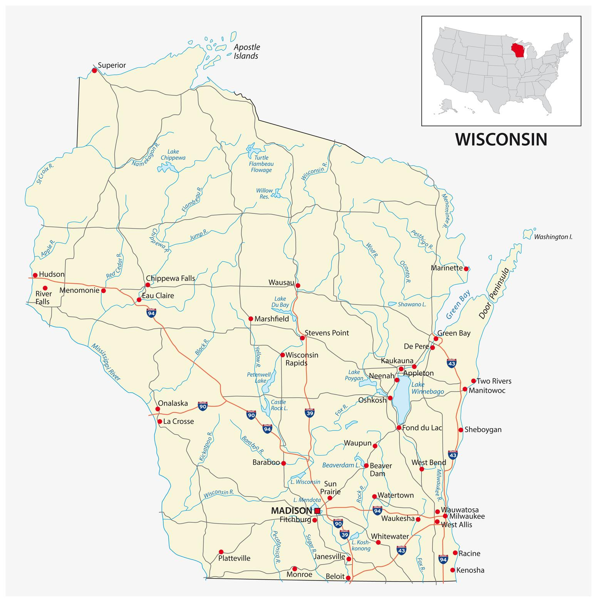

Wisconsin History
Wisconsin became a U.S. territory following the American Revolution. Soon after, it began attracting settlers who were
looking for work in its hustling mining, lumber, and dairy industries. It was admitted to the union as the 30th state in
1848. The years leading up to the civil war, Wisconsin was an important stop on the Underground Railroad which held many
slaves passing through on their way to freedom in Canada. In current times, Wisconsin leads the nation in dairy production.
Wisconsins current population is 5,931,367.

Why Wisconsin?
Wisconsin is perfect for people with lots of different interests!
Take a look!
Take a look!
- There is approximately 471,329 acres of state forests.
- Almost all natural lakes in Wisconsin have resulted from glaciers.
- The first circus in the US was in Delavan, Wisconsin.
- Door Country has more shoreline than any other county in the US, over 250 miles.
- The American Birkebeiner, the largest cross country skiing race in the US, is held in Hayward, Wisconsin every year.
- More than 800,000 deer roam the Wisconsin woods.
- Wisconsin is a leading producer of Ginseng in US.
- Green Bay, Wisconsin is known as the “Toilet Paper Capital” of the world.
- The first ice cream sundae was concocted in Two Rivers in 1881.
- According to Wisconsin stories, Wisconsin contains more ghosts per square mile than any other state in the nation.
Want to know more?Click here!